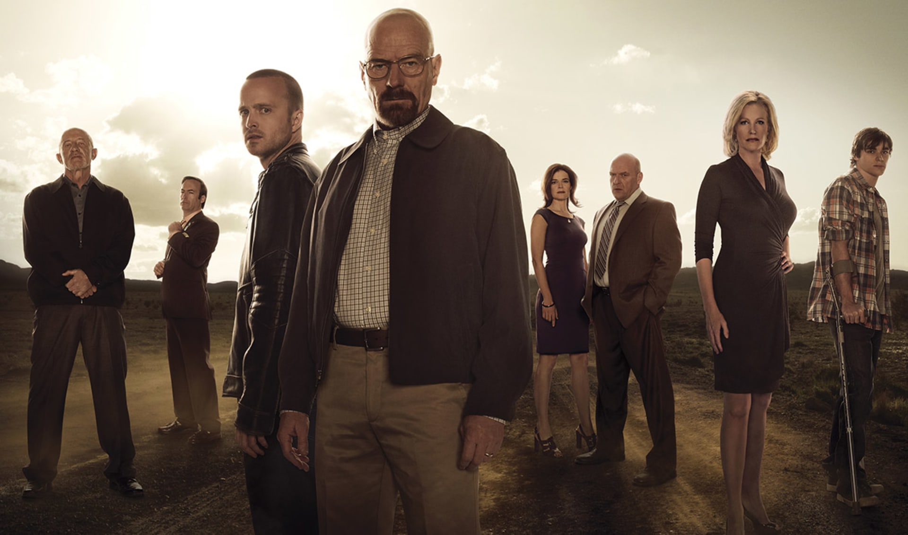

Breaking Bad is an American neo-Western crime drama television series created and produced by Vince Gilligan. The show aired on AMC from January 20, 2008, to September 29, 2013. It was set and filmed in Albuquerque, New Mexico, and tells the story of Walter White (Bryan Cranston), an underemployed and depressed high school chemistry teacher who is struggling with midlife crisis and a recent diagnosis of stage-three lung cancer. White and his former student Jesse Pinkman (Aaron Paul) turn to crime by producing and selling crystallized methamphetamine to secure his family's financial future before he dies, while navigating the dangers of the criminal underworld. .
Among the show's co-stars are Anna Gunn and RJ Mitte as Walter's wife Skyler and son Walter, Jr., and Betsy Brandt and Dean Norris as Skyler's sister Marie Schrader and her husband Hank, a DEA agent. Others include Bob Odenkirk as the sleazy lawyer Saul Goodman, Jonathan Banks as private investigator and fixer Mike Ehrmantraut, and Giancarlo Esposito as drug kingpin Gus Fring. The final season introduces Jesse Plemons as the criminally ambitious Todd Alquist, and Laura Fraser as Lydia Rodarte-Quayle, a business executive secretly managing Walter's global meth sales for her company.
Breaking Bad is widely regarded as one of the greatest television series of all time. It had moderate viewership in its first three seasons, but the fourth and fifth seasons saw a significant rise in viewership when it was made available on Netflix just before the fourth season premiere. By the time that the series finale aired, it was among the most-watched cable shows on American television. The show received numerous awards, including 16 Primetime Emmy Awards, eight Satellite Awards, two Golden Globe Awards, two Peabody Awards, two Critics' Choice Awards, and four Television Critics Association Awards. Cranston won the Primetime Emmy Award for Outstanding Lead Actor in a Drama Series four times, while Aaron Paul won the Primetime Emmy Award for Outstanding Supporting Actor in a Drama Series three times; Anna Gunn won the Primetime Emmy Award for Outstanding Supporting Actress in a Drama Series twice. In 2013, Breaking Bad entered the Guinness World Records as the most critically acclaimed show of all time.
